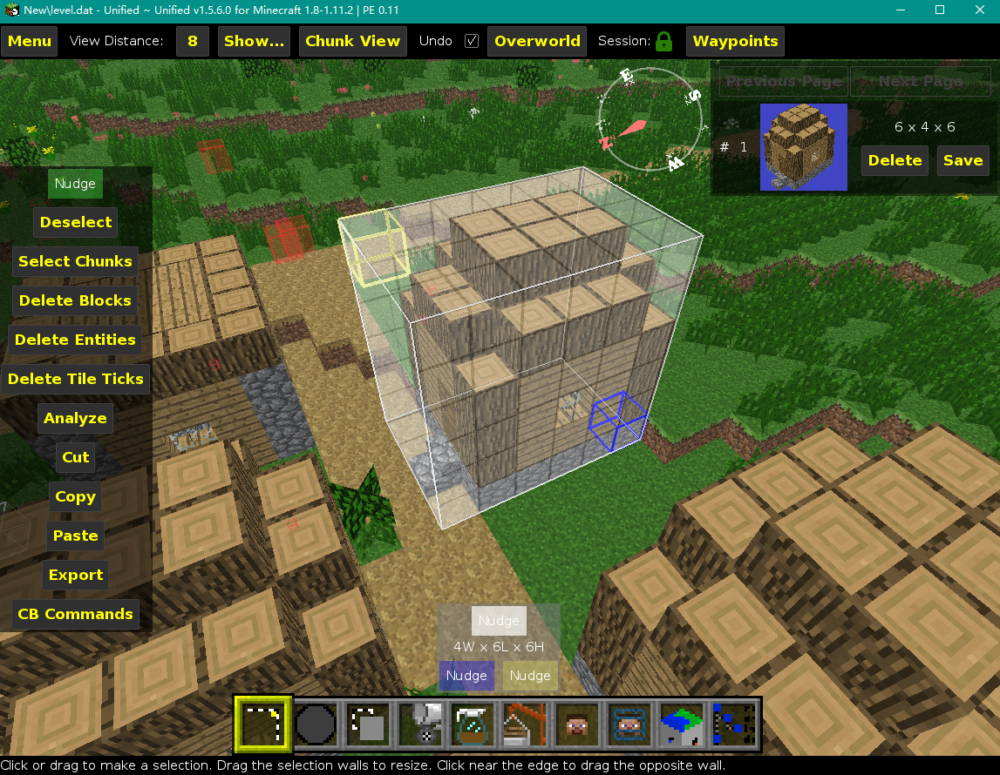
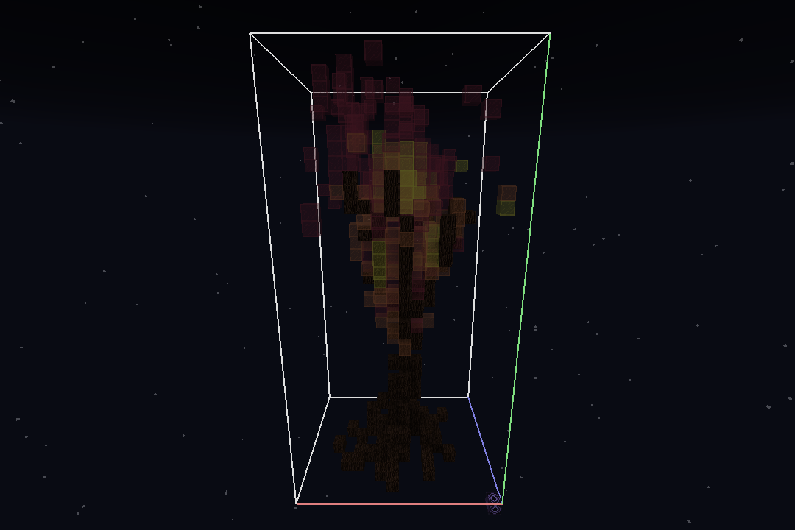
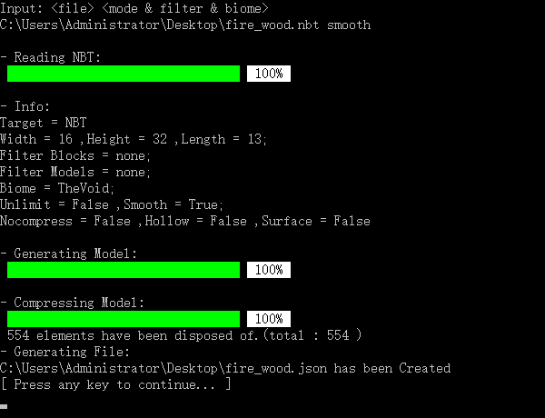
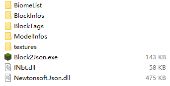
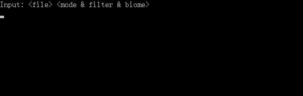
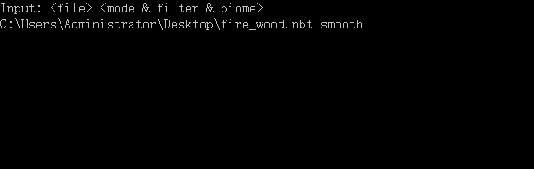
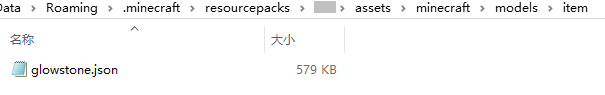
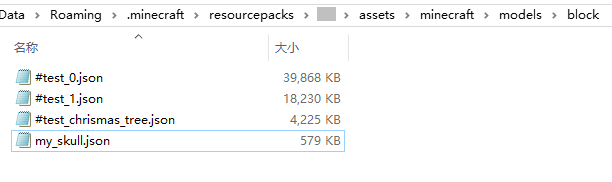

实例 - 快速雕塑
—— 快速建立Json模型
获取方块文件
首先你需要一个方块文件(.schematic或.nbt)，你可以到以下链接中获取：
 minecraft-schematics.com
minecraft-schematics.com minecraft-schematics.net
minecraft-schematics.netplanetminecraft.com: schematics
minecraftstuff.net: schematics
schematicstore.com
 chunkfactory.com
chunkfactory.com
一个schematic分享社区，允许玩家自由上传、下载、搜索、评论、评分。该网站目前已分门别类地搜罗了近万份schematic，可以称得上是最便捷的schematic获取源。
不只是schematic的分享社区，还包括了材质、皮肤。同样允许玩家自由分享，也有schematic的分类，但干货不是太多，质量也不是很高。
全球最大的Minecraft资源分享站，其中分类为"可下载schematic"的作品。你可以进一步使用搜索功能，找到你想要的schematic。
同样是一个资源分享站，其中包括了schematic作品。但仅提供搜索与排序，没有分类。
付费schematic资源站。主要都是一些专业的建筑体素模型作品。资源比较贵，不推荐。
同样是一个付费schematic资源站。也主要是一些专业的建筑体素模型作品。你甚至还可以购买礼品卡。资源比较贵，不推荐。
或者你可以直接从你的地图中获取：
使用Mcedit

使用结构方块

选中一块区域后，Ctrl+C或者点击左边栏的Copy复制该区域。接下来点击复制区域框下的Save，在保存窗口中选择.schematic格式即可。
使用结构方块，切换到[S]模式，给该结构命名，并调整相关参数（例如区域起始点，区域大小等），在一切就绪后点击Save即可。最后你可以在存档的generated/minecraft/structures（1.13）或structures（1.12）文件夹下找到刚刚保存的结构。
生成Json模型
基本步骤
开启记录

获取了方块文件后，就是使用Block2Json生成模型了。
找到Block2Json.exe并打开。
等待资源加载后，得到如上的界面，用于输入【命令行】命令。
按下↵，等待生成完成。
在命令行中添加命令log，用于记录错误。
按下↵，全部过程结束时会在程序文件夹下生成错误信息记录。
这便是得到的Json模型文件和log文件。（'x'处表示系统时间）
导入Minecraft
生成了模型后，就可以将模型导入到Minecraft了。模型在Minecraft中分为方块模型和物品模型，其存放的位置和在游戏中的展示方式并不相同。
方块模型
物品模型

以我的头为原型做成的一个像素模型，转化的"my_skull.json"模型为例。
把json模型拖入到材质包的assets/minecraft/models/block文件夹中。
把文件名改名为一个方块（图中为萤石）

读取资源包，进入游戏，就能看到这个方块的模型已经被修改了。

因为修改的只是萤石的模型，所以仍然可以发光。
把json模型拖入到材质包的assets/minecraft/modelsitem文件夹中。
将文件名改为一个物品或方块（图中仍然为萤石），然后载入资源包并打开游戏。从物品栏和手持栏来看，和上面的方块模型毫无区别。

唯一的区别在于放置后，其方块模型不会被影响。